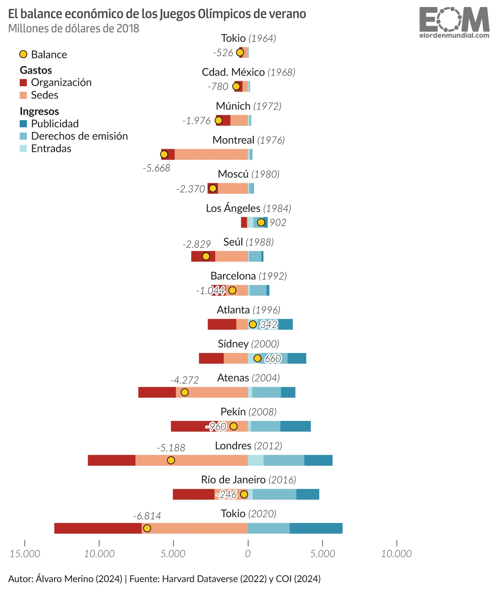
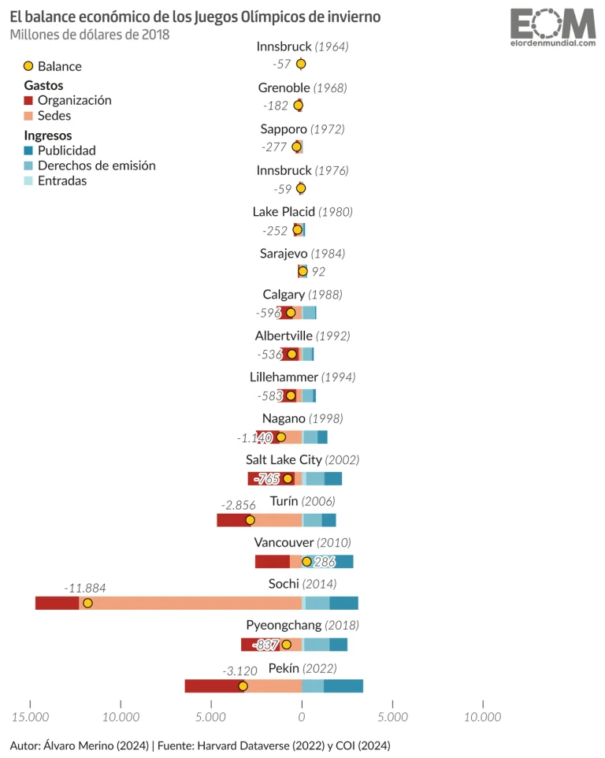
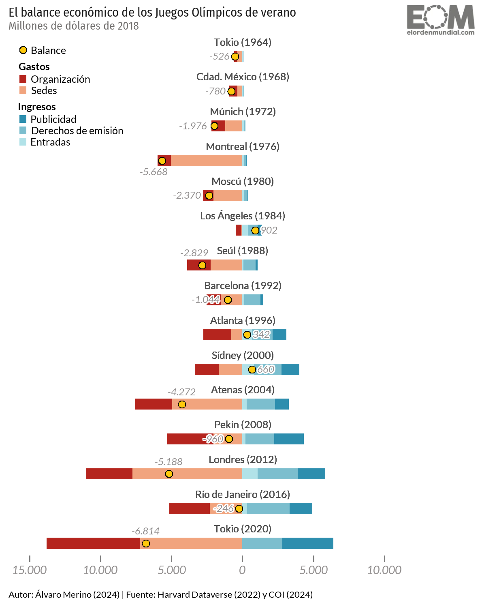
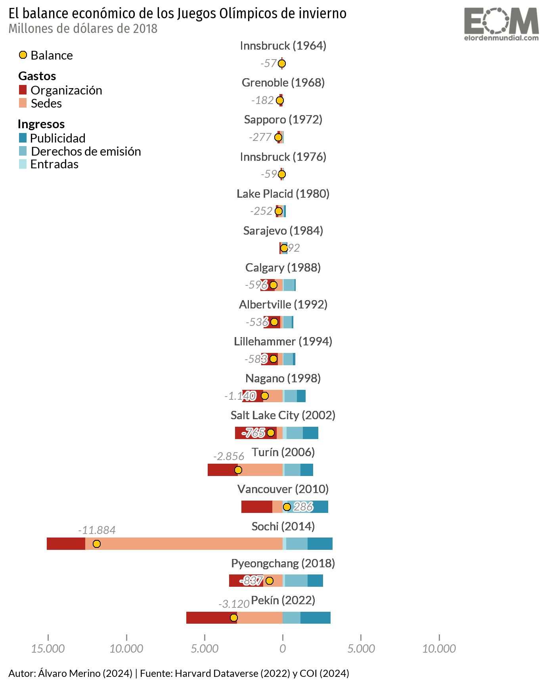
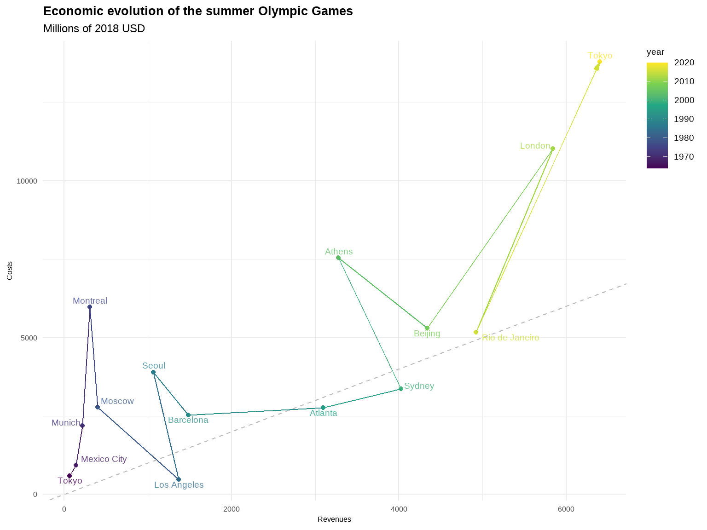

This project aims at the reproduction of a graph displaying the costs and revenues of each summer and winter Olympic Games from 1964 to 2022.
This is a preliminary version of my project for the course on Data Visualization. While the main aspects of the analysis have been addressed, the accompanying text is not fully developed, as most explanations and observations are currently embedded within the code chunks. This version is intended to gather feedback and will have to be revised based on comments or suggestions. Despite these limitations, the key elements of the project have been included to demonstrate its structure and primary insights.
The original graphs that will be the focus of this project were retrieved from an article by El Orden Mundial. They represent different categories of costs and revenues for each edition of summer and winter Olympic Games from 1964 to 2022 through stacked bars. The balance of each of these games is represented through yellow points, with the actual values printed next to them.


The first step is to upload all the libraries that will be used for the representation and alternative visualization of the graph.
The next step is importing the database, which was available at Harvard Dataverse (https://doi.org/10.7910/DVN/CPQEHN). The original Excel file was explored to check what rows and columns were needed. With this step, the last part of the data set, containing information on Football World Cups, was excluded.
data <- read_excel(
path = "olympicgames.xlsx",
range = "A1:AC31", skip = 2)The google fonts that will be used are then included.
sysfonts::font_add_google("Fira Sans Condensed", family = "fira_sans_condensed")
sysfonts::font_add_google("Lato", family = "lato")
showtext_auto()The following code allows to upload the El Orden Mundial logo which will be printed in the reproduced plots.
library(png)
library(grid)
get_png <- function(filename) {
grid::rasterGrob(png::readPNG(filename), interpolate = TRUE)
}
logo <- get_png("logo_eom.png")The original Excel file was far from clean, so it required considerable preprocessing.
df <- data |>
rename(city_year = 3) |> # this column has a very long name from the original excel
select(city_year, ends_with("2018)")) |> # these are all the columns we need
drop_na() # the first row is all NAs from the excel's format,
#I drop them here bc before selecting the right columns, there were NAs in every row.
df <- df |>
separate(city_year, into = c("year", "city"), sep = " ", extra = "merge")
df[1, "year"] <- "1964"
df[1, "city"] <- "Tokyo" # these two were misnamed from the original excel
# renaming the columns, using the positions because they have long and complicated names
df <- df |>
rename(ticketing_revenue = 3, broadcast_revenue = 4, international_spons_revenue = 5,
domestic_spons_revenue = 6, venues_cost = 7, organisation_cost = 8)
# changing the cells from "No domestic sponsorship" to zero, so we can add international and domestic
# sponsorship revenues, which are not separated in the original graph,
# then making it numeric because it was stored as character
df <- df |>
mutate(
domestic_spons_revenue = as.numeric(ifelse(domestic_spons_revenue == "No domestic sponsorship",
0, domestic_spons_revenue)))
# converting it all to millions of USD to make reading easier
df <- df |>
mutate(
across(
c("ticketing_revenue":"organisation_cost"),
~ . / 1e6
))
# making costs negative
df <- df |>
mutate(
venues_cost = -venues_cost,
organisation_cost = -organisation_cost
)
# creating a variable for the total sponsorship revenues and relocating it after international
# and domestic, then dropping international and domestic columns
df <- df |>
mutate(
sponsorship_revenue = international_spons_revenue + domestic_spons_revenue
) |>
relocate(sponsorship_revenue, .before = venues_cost)
df <- df |>
select(-c(international_spons_revenue, domestic_spons_revenue))
# creating a variable for the balance:
df <- df |> mutate(balance = rowSums(across(c("ticketing_revenue":"organisation_cost"))))
# translating the names to Spanish for the replication
df <- df |>
mutate(city = case_when(
city == "Tokyo" ~ "Tokio",
city == "Mexico City" ~ "Cdad. México",
city == "Munich" ~ "Múnich",
city == "Moscow" ~ "Moscú",
city == "Los Angeles" ~ "Los Ángeles",
city == "Seoul" ~ "Seúl",
str_starts(city, "Barcelona") ~ "Barcelona", # some rows still have long names
city == "Sydney" ~ "Sídney",
city == "Athens" ~ "Atenas",
city == "Beijing" ~ "Pekín",
city == "London" ~ "Londres",
str_starts(city, "Rio") ~ "Río de Janeiro",
city == "Turin" ~ "Turín",
str_starts(city, "PyeongChang") ~ "Pyeongchang",
TRUE ~ city
))
# adding the data for Tokyo 2020 and Beijing 2022 manually from a different dataset, because they were missing in the main one
df <- df |> add_row(
year = "2020", city = "Tokio", ticketing_revenue = 0, broadcast_revenue = 2800, sponsorship_revenue = 3600,
venues_cost = -7200, organisation_cost = -6600, balance = -6814, .after = 14)
df <- df |> add_row(
year = "2022", city = "Pekín", ticketing_revenue = 0,
broadcast_revenue = 1146, sponsorship_revenue = 1910,
venues_cost = -2920, organisation_cost = -3256, balance = -3120,
.after = 30)
# pivoting to make it tidy data
tidydf <- df |>
pivot_longer(cols = c("ticketing_revenue":"balance"),
names_to = "type", values_to = "value")
# creating the season variable
tidydf <- tidydf |>
mutate(
season = case_when(
row_number() <= 90 ~ "summer", # rows 1 to 90 are summer games
row_number() > 90 ~ "winter" # rows 91 onwards are winter games
))
# adding a new variable to categorize as "Gastos" or "Ingresos" in the legend
tidydf <- tidydf |>
mutate(
category = case_when(
type %in% c("organisation_cost", "venues_cost") ~ "Gastos",
type %in% c("ticketing_revenue", "broadcast_revenue", "sponsorship_revenue") ~ "Ingresos",
type %in% "balance" ~ "Balance",
TRUE ~ NA_character_))
# converting the type variable to factor to be able to order the stacked areas
tidydf <- tidydf |>
mutate(type = factor(type,
levels = c("sponsorship_revenue", # Topmost
"broadcast_revenue",
"ticketing_revenue",
"organisation_cost",
"venues_cost", # Bottommost
"balance")))
# making the years numeric because they were stored as character
tidydf$year <- as.numeric(tidydf$year)
# setting the hjust and vjust aesthetics directly in the dataset
tidydf <- tidydf |>
mutate(city_year = paste(city, " (", year, ")", sep = ""))
tidydf <- tidydf |>
mutate(
hjust_balance = case_when(
city %in% c("Los Ángeles", "Atlanta", "Sídney", "Sarajevo", "Vancouver") ~ -0.35, # Right of positive balances
city %in% c("Atenas", "Londres", "Sochi") ~ 0.5, # Centered
city %in% c("Montreal", "Seúl", "Turín") ~ 0.8,
city_year %in% c("Tokio (2020)", "Pekín (2022)") ~ 0.5,
TRUE ~ 1.3 # Left of negative balances
),
vjust_balance = case_when(
city %in% c("Seúl", "Atenas", "Londres", "Sochi", "Turín") ~ -1.3, # Above the point
city == "Montreal" ~ 2.1, # Below the point
city_year %in% c("Tokio (2020)", "Pekín (2022)") ~ -1.3,
TRUE ~ 0.45)) # Aligned with the pointThe first graph contains information on summer olympics, so the dataset must be filtered in order to plot just that data.
plot <-
ggplot(tidydf |> filter(season == "summer")) +
# Stacked bars for revenues and costs
geom_bar(
data = tidydf |> filter(season == "summer" & type != "balance" & category == "Gastos"),
aes(x = value, y = reorder(city_year, year, decreasing = TRUE), fill = type),
stat = "identity",
width = 0.32) +
scale_fill_manual(
values = c(
"organisation_cost" = "#b5251e",
"venues_cost" = "#f1a47e"
),
labels = c(
"organisation_cost" = "Organización",
"venues_cost" = "Sedes"
),
name = "Gastos",
guide = guide_legend(order = 2, byrow = TRUE)
) +
new_scale_fill() +
geom_bar(
data = tidydf |> filter(season == "summer" & type != "balance" & category == "Ingresos"),
aes(x = value, y = reorder(city_year, year, decreasing = TRUE), fill = type),
stat = "identity",
width = 0.32) +
scale_fill_manual(
values = c(
"ticketing_revenue" = "#b1e2e8",
"broadcast_revenue" = "#7cbece",
"sponsorship_revenue" = "#2d8eae"),
labels = c(
"ticketing_revenue" = "Entradas",
"broadcast_revenue" = "Derechos de emisión",
"sponsorship_revenue" = "Publicidad"
),
name = "Ingresos",
guide = guide_legend(order = 3, byrow = TRUE)
) +
# The new scale ensures that the balance is included in the legend
new_scale_fill() +
# Add the balance as a yellow dot
geom_point(data = tidydf |> filter(season == "summer" & category == "Balance"),
aes(x = value, y = reorder(city_year, year, decreasing = TRUE), fill = category),
color = "black", size = 2.9, stroke = 0.55, shape = 21) +
scale_fill_manual(
values = c("Balance" ="#fec90c"),
guide = guide_legend(order = 1) # Control the order of the legend
) +
# City names
geom_text(
data = tidydf |> filter(season == "summer"),
aes(
x = 0,
y = reorder(city_year, year, decreasing = TRUE),
label = city_year,
hjust = 0.5,
vjust = -1.52
),
family = "lato",
size = 6.5,
color = "#4f4f4f",
fontface = "plain",
show.legend = FALSE
) +
# Add the balance next to the yellow point
geom_shadowtext(
data = tidydf |> filter(season == "summer" & type == "balance"),
aes(x = value, y = reorder(city_year, year, decreasing = TRUE),
label = scales::label_number(big.mark = ".", decimal.mark = ",")(round(value, 0)),
family = "lato",
hjust = hjust_balance,
vjust = vjust_balance),
size = 6.2,
fontface = "italic",
color = "#918e8e",
bg.colour = "white",
bg.r = 0.18
) +
# Title, subtitle and caption
labs(
title = "El balance económico de los Juegos Olímpicos de verano",
subtitle = "Millones de dólares de 2018",
x = NULL,
y = NULL,
fill = NULL,
caption = "Autor: Álvaro Merino (2024) | Fuente: Harvard Dataverse (2022) y COI (2024)"
) +
# Theme adjustments
theme_minimal(base_size = 12) +
theme(
plot.title = element_text(
family = "fira_sans_condensed",
size = 23,
color = "#1c1c1c",
margin = margin(t = 2.5, b = 0.5)
),
plot.subtitle = element_text(family = "fira_sans_condensed",
size = 21,
color = "#757372",
margin = margin(t = 2, b = 0)
),
legend.title = element_text(family = "lato", size = 19, face = "bold", margin = margin(b = 3)),
legend.text = element_text(family = "lato", size = 19, margin = margin(b = 0, l = 3.5)),
legend.position = c(0, 1),
legend.justification = c(0, 1),
legend.margin = margin(c(6.5, 1, 0, 7)),
legend.spacing = unit(0, "cm"),
legend.key.spacing.y = unit(0.07, "cm"),
legend.key.height = unit(0.25, "cm"),
legend.key.width = unit(0.28, "cm"),
legend.box.spacing = unit(0, "cm"),
legend.box.margin = margin(c(12, 0, 0, 5)),
plot.caption = element_text(family = "lato", hjust = 0, size = 16.5, margin = margin(t = 14)),
plot.margin = margin(t = 5, b = 7, l = 5, r = 5),
panel.grid.major.y = element_blank(),
panel.grid.minor.x = element_blank(),
panel.grid = element_blank(),
axis.text.y = element_blank(),
axis.text.x = element_text(family = "lato", color = "#918e8e",
face = "italic", size = 21, margin = margin(t = 3.5)),
axis.ticks.x = element_line(color = "#7d7d7d"),
axis.ticks.length.x = unit(0.22, "cm")
) +
# Set x-axis scale to go from -15000 to 10000
scale_x_continuous(
limits = c(-15000, 15000),
breaks = seq(-15000, 10000, by = 5000),
# Remove minus signs only for negative values
labels = function(x) {
ifelse(x == 15000, "",
scales::label_number(big.mark = ".", decimal.mark = ",")(ifelse(x < 0, abs(x), x)))
}
) +
scale_y_discrete(expand = expansion(mult = c(0.025, 0.05)))Once the plot is stored as an object, it can be printed alongside the logo.
plot +
annotation_custom(logo, xmin = 11000, xmax = 16850, ymin = 15.3, ymax = 16.85) +
coord_cartesian(clip = "off")
The next code is practically identical to the previous one, but filtering out the summer games and leaving only the winter editions.
plot_winter <-
ggplot(tidydf |> filter(season == "winter")) +
geom_bar(
data = tidydf |> filter(season == "winter" & type != "balance" & category == "Gastos"),
aes(x = value, y = reorder(city_year, year, decreasing = TRUE), fill = type),
stat = "identity",
width = 0.33) +
scale_fill_manual(
values = c(
"organisation_cost" = "#b5251e",
"venues_cost" = "#f1a47e"
),
labels = c(
"organisation_cost" = "Organización",
"venues_cost" = "Sedes"
),
name = "Gastos",
guide = guide_legend(order = 2, byrow = TRUE)
) +
new_scale_fill() +
geom_bar(
data = tidydf |> filter(season == "winter" & type != "balance" & category == "Ingresos"),
aes(x = value, y = reorder(city_year, year, decreasing = TRUE), fill = type),
stat = "identity",
width = 0.33) +
scale_fill_manual(
values = c(
"ticketing_revenue" = "#b1e2e8",
"broadcast_revenue" = "#7cbece",
"sponsorship_revenue" = "#2d8eae"),
labels = c(
"ticketing_revenue" = "Entradas",
"broadcast_revenue" = "Derechos de emisión",
"sponsorship_revenue" = "Publicidad"
),
name = "Ingresos",
guide = guide_legend(order = 3, byrow = TRUE)
) +
new_scale_fill() +
geom_point(data = tidydf |> filter(season == "winter" & category == "Balance"),
aes(x = value, y = reorder(city_year, year, decreasing = TRUE), fill = category),
color = "black", size = 3.1, stroke = 0.7, shape = 21) +
scale_fill_manual(
values = c("Balance" ="#fec90c"),
guide = guide_legend(order = 1)
) +
geom_text(
data = tidydf |> filter(season == "winter"),
aes(
x = 0,
y = reorder(city_year, year, decreasing = TRUE),
label = city_year,
hjust = 0.5,
vjust = -1.66
),
family = "lato",
size = 7.7,
color = "#4f4f4f",
fontface = "plain",
show.legend = FALSE
) +
geom_shadowtext(
data = tidydf |> filter(season == "winter" & type == "balance"),
aes(x = value, y = reorder(city_year, year, decreasing = TRUE),
label = scales::label_number(big.mark = ".", decimal.mark = ",")(round(value, 0)),
family = "lato",
hjust = hjust_balance,
vjust = vjust_balance),
size = 7.2,
fontface = "italic",
color = "#918e8e",
bg.colour = "white",
bg.r = 0.16
) +
labs(
title = "El balance económico de los Juegos Olímpicos de invierno",
subtitle = "Millones de dólares de 2018",
x = NULL,
y = NULL,
fill = NULL,
caption = "Autor: Álvaro Merino (2024) | Fuente: Harvard Dataverse (2022) y COI (2024)"
) +
theme_minimal(base_size = 12) +
theme(
plot.title = element_text(
family = "fira_sans_condensed",
size = 27,
color = "black",
margin = margin(t = 3, b = 0.5)
),
plot.subtitle = element_text(family = "fira_sans_condensed",
size = 25,
color = "#757372",
margin = margin(t = 2, b = 0)
),
legend.title = element_text(family = "lato", size = 23, face = "bold", margin = margin(b = 3)),
legend.text = element_text(family = "lato", size = 23, margin = margin(b = 0, l = 3.5)),
legend.position = c(0, 1),
legend.justification = c(0, 1),
legend.margin = margin(c(6.5, 1, 0, 7)),
legend.spacing = unit(0.1, "cm"),
legend.key.spacing.y = unit(0.07, "cm"),
legend.key.height = unit(0.17, "cm"),
legend.key.width = unit(0.3, "cm"),
legend.box.spacing = unit(0.08, "cm"),
legend.box.margin = margin(c(13, 0, 0, 5)),
plot.caption = element_text(family = "lato", hjust = 0, size = 19, margin = margin(t = 14)),
plot.margin = margin(t = 5, b = 7, l = 5, r = 5),
panel.grid.major.y = element_blank(),
panel.grid.minor.x = element_blank(),
panel.grid = element_blank(),
axis.text.y = element_blank(),
axis.text.x = element_text(family = "lato", color = "#918e8e",
face = "italic", size = 21, margin = margin(t = 3.5)),
axis.ticks.x = element_line(color = "#918e8e"),
axis.ticks.length.x = unit(0.22, "cm")
) +
scale_x_continuous(
limits = c(-16000, 15000),
breaks = seq(-15000, 10000, by = 5000),
labels = function(x) {
ifelse(x == 15000, "",
scales::label_number(big.mark = ".", decimal.mark = ",")(ifelse(x < 0, abs(x), x)))
}
) +
scale_y_discrete(expand = expansion(mult = c(0.03, 0.05)))This code prints the winter plot with the EOM logo just as the summer one, but in a slightly different position.
plot_winter +
annotation_custom(logo, xmin = 11000, xmax = 16850, ymin = 16, ymax = 18.2) +
coord_cartesian(clip = "off")
The shortcomings identified in these two replicas are:
The years of each edition between parentheses should be in italics. However, what is printed in the plot is not the actual text, but the values of the column “city_year”. Even if I pasted the values of “city” and “year” into the label, I could not figure out how to give each of them different formats.
Some parts of the text printed in the original graphs have a lighter or semi-bold face that could not be achieved using Google fonts.
For the alternative visualization of the original graphs, I focused on the comparison between summer and winter Olympic Games, which would allow to combine the information of two independent plots in one. I also wanted to highlight the evolution of each type of cost and revenue, as well as the balance, which is ultimately a summary of them.
alt_plot <-
tidydf |> filter(type == "balance") |>
ggplot(aes(
x = year,
y = value,
color = season,
group = season,
text = paste("Edition:", city_year,
"\nValue:", round(value, 2),
"\nSeason:", season))) +
geom_hline(yintercept = 0, color = "darkgray", linetype = "solid", linewidth = 0.6) +
geom_line() +
geom_point() +
scale_color_manual(
values = c("summer" = "#e68211", "winter" = "#2b83ba"),
labels = c("summer" = "Summer Games", "winter" = "Winter Games"),
name = ""
) +
geom_label_repel(
aes(label = paste0(city, " '", substr(year, 3, 4))),
# hjust = -0.1, # Adjust the position of the text horizontally
label.size = NA,
# angle = 45,
show.legend = FALSE,
alpha = 0.8,
label.padding = 0.2,
size = 4,
force = 2,
force_pull = 4,
box.padding = 0.3
) +
labs(
x = NULL,
y = "Millions of 2018 USD",
title = "Economic evolution of the Summer and Winter Olympic Games",
subtitle = "Balance"
) +
theme_minimal() +
theme(
plot.title = element_text(size = 20, face = "bold"),
plot.subtitle = element_text(size = 15, margin = margin(t = 5)),
axis.text.x = element_text(size = 14, angle = 0, hjust = 0.5),
axis.text.y = element_text(size = 14),
axis.title.y = element_text(size = 14),
legend.position = c(0.2, 0.2),
legend.text = element_text(size = 14),
legend.spacing = unit(0.2, "cm"),
legend.spacing.y = unit(0, "cm"),
legend.spacing.x = unit(0, "cm"),
legend.key.size = unit(0.3, "cm"),
panel.grid.minor.y = element_blank()
)# rounding the value to show two decimals, making the costs positive again
tidydf <- tidydf |>
mutate(value_rcd = round(abs(value), 2))
# cleaning up the names of each type of cost or revenue for the plot facets
tidydf <- tidydf |>
mutate(type_rcd = case_when(
type == "ticketing_revenue" ~ "Ticketing revenues",
type == "broadcast_revenue" ~ "Broadcast revenues",
type == "sponsorship_revenue" ~ "Sponsorship revenues",
type == "organisation_cost" ~ "Organisation costs",
type == "venues_cost" ~ "Venues costs",
TRUE ~ type
))
# reordering the type variable for the facets
tidydf <- tidydf |>
mutate(type_rcd = factor(type_rcd,
levels = c("Sponsorship revenues",
"Broadcast revenues",
"Ticketing revenues",
"Organisation costs",
"Venues costs",
"balance")))
# plotting the facets
alt_facet <- tidydf |> filter(type != "balance") |>
ggplot(
aes(
x = year,
y = value_rcd,
group = season,
color = season,
text = paste("Edition:", city_year,
"\nValue:", value_rcd,
"\nSeason:", season))
) +
geom_rect(aes(fill = category), xmin = -Inf, xmax = Inf, ymin = -Inf, ymax = Inf,
color = NA,
alpha = 0.05) +
geom_hline(yintercept = 0, color = "darkgray", linetype = "solid", linewidth = 0.4) +
geom_line(size = 0.5) +
geom_point(size = 1.4) +
scale_color_manual(
values = c("summer" = "#e68211", "winter" = "#2b83ba"),
labels = c("summer" = "Summer Games", "winter" = "Winter Games"),
name = ""
) +
scale_fill_manual(
values = c(
"Ingresos" = "#c8ffc2",
"Gastos" = "#fcdcca",
"Balance" = "#d8eafd"
),
name = "Category"
) +
labs(
title = "",
x = NULL,
y = NULL,
fill = ""
) +
facet_wrap(~type_rcd, nrow = 5, scales = "free_y") +
theme_minimal(base_size = 12) +
theme(
plot.title = element_blank(),
plot.subtitle = element_blank(),
legend.position = "none",
panel.grid.major.x = element_blank(),
panel.grid.major.y = element_line(color = "#eeeeee"),
panel.grid.minor.x = element_blank(),
panel.grid.minor.y = element_blank(),
panel.grid = element_blank(),
strip.text = element_text(size = 14),
axis.text.x = element_text(size = 14, hjust = 0.5),
axis.text.y = element_text(
size = 14,
face = "plain")
)We can arrange these two plots together in a single graph.
I chose to position the labels around the points so as not to have a very crowded x-axis. However, there are many labels and in some cases they overlap or are confusingly identified with their data points.
Lastly, we can merge the last two graphs into an interactive plot. This involves some trade-offs: the legend is dropped, text labels are excluded, colored backgrounds disappear, as well as the plot’s subtitle, labels’ size is seriously distorted… The main payoff is that we can display the most relevant information about each data point without resulting in a very cluttered or messy graph.
Another alternative is to plot a path.
path_df <- tidydf |> select(year, city, type, value, season)
path_df <- path_df |> pivot_wider(
names_from = type,
values_from = value
)
path_df <- path_df |> mutate(
revenues = ticketing_revenue + broadcast_revenue + sponsorship_revenue,
costs = abs(venues_cost + organisation_cost)
) |>
select(year, city, season, revenues, costs)
path_df <- path_df |>
mutate(
city = case_when(
city == "Tokio" ~ "Tokyo",
city == "Cdad. México" ~ "Mexico City",
city == "Múnich" ~ "Munich",
city == "Moscú" ~ "Moscow",
city == "Los Ángeles" ~ "Los Angeles",
city == "Seúl" ~ "Seoul",
city == "Sídney" ~ "Sydney",
city == "Atenas" ~ "Athens",
city == "Pekín" ~ "Beijing",
city == "Londres" ~ "London",
city == "Río de Janeiro" ~ "Rio de Janeiro",
city == "Turín" ~ "Turin",
TRUE ~ city
)
)
path_df <- path_df |> mutate(
vjust_city = case_when(
city == "Tokyo" & year == 2020 ~ -0.6,
city %in% c("Montreal", "Seoul", "Athens", "Mexico City", "Moscow") ~ -0.6,
city %in% c("Tokyo", "Los Angeles", "Barcelona", "Atlanta", "Beijing",
"Rio de Janeiro") ~ 1.3,
TRUE ~ 0),
hjust_city = case_when(
city %in% c("Munich", "London") ~ 1.1,
city %in% c("Rio de Janeiro", "Sydney", "Moscow", "Mexico City") ~ -0.1,
TRUE ~ 0.5)
)
ggplot(path_df |> filter(season == "summer")) +
aes(x = revenues, y = costs, color = year) +
geom_point() +
geom_path(arrow = arrow(
angle = 15, type = "closed",
length = unit(0.1, "inches")
)) +
geom_text(aes(label = city,
vjust = vjust_city,
hjust = hjust_city),
show.legend = FALSE,
alpha = 0.8,
size = 5,
) +
scale_color_viridis_c() +
geom_abline(slope = 1, intercept = 0, linetype = "dashed", color = "gray") +
labs(
title = "Economic evolution of the summer Olympic Games",
subtitle = "Millions of 2018 USD",
x = "Revenues",
y = "Costs"
) +
theme_minimal() +
theme(
plot.title = element_text(size = 20, face ="bold"),
plot.subtitle = element_text(size = 18),
legend.position = "right",
legend.justification = c(0, 1),
legend.title = element_text(size = 14),
legend.text = element_text(size = 14),
axis.text.x = element_text(size = 12),
axis.text.y = element_text(size = 12),
axis.title.x = element_text(size = 12),
axis.title.y = element_text(size = 12))
This plot allows us to track the evolution of the relationship between costs and revenues of the summer games. We can observe that both dimensions tend to increase overtime, most notably costs. Furthermore, we can quickly check what editions had a positive or negative balance. I did not manage to place annotations above and below the abline to clarify what data points in each area of the graph represent positive or negative balances.